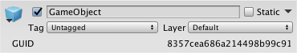

Editor.finishedDefaultHeaderGUI
Description 描述
An event raised while drawing the header of the Inspector window, after the default header items have been drawn.
Add an event handler to this event in order to draw additional items in the header for the Editor passed to the event handler method.
The following example script displays an asset's GUID as a copyable label in the header, if the inspected object is a persistent asset and not a Scene object. Copy this example script into a file called EditorHeaderGUID.cs and put it in a folder called Editor.

The Inspector header with a custom GUID control added.
using UnityEditor;
[InitializeOnLoadAttribute] static class EditorHeaderGUID { static EditorHeaderGUID() { Editor.finishedDefaultHeaderGUI += DisplayGUIDIfPersistent; }
static void DisplayGUIDIfPersistent(Editor editor) { if (!EditorUtility.IsPersistent(editor.target)) return;
var guid = AssetDatabase.AssetPathToGUID(AssetDatabase.GetAssetPath(editor.target)); var totalRect = EditorGUILayout.GetControlRect(); var controlRect = EditorGUI.PrefixLabel(totalRect, EditorGUIUtility.TrTempContent("GUID")); if (editor.targets.Length > 1) EditorGUI.LabelField(controlRect, EditorGUIUtility.TrTempContent("[Multiple objects selected]")); else EditorGUI.SelectableLabel(controlRect, guid); } }